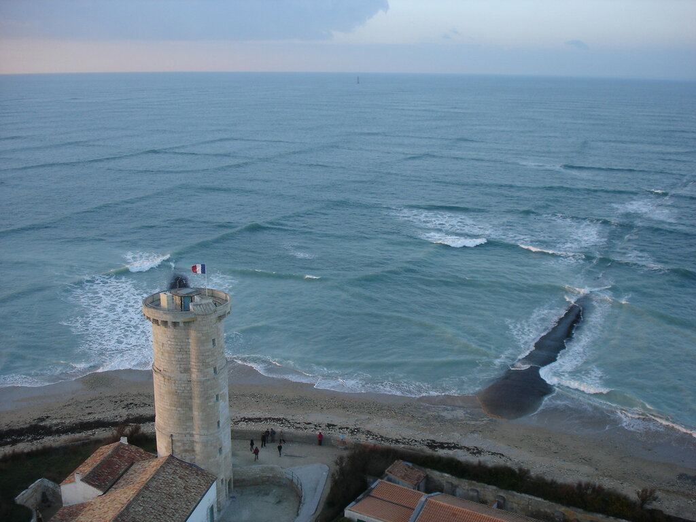
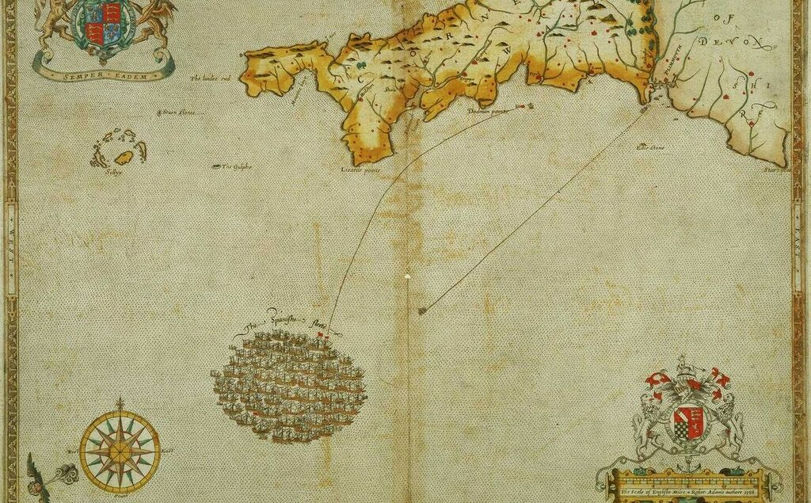
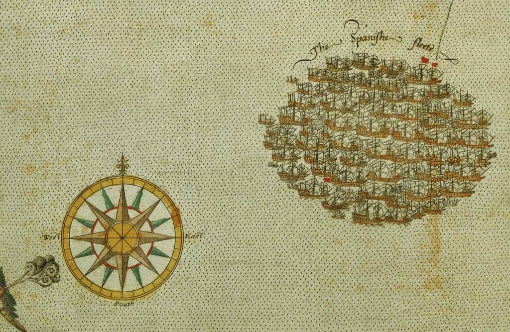
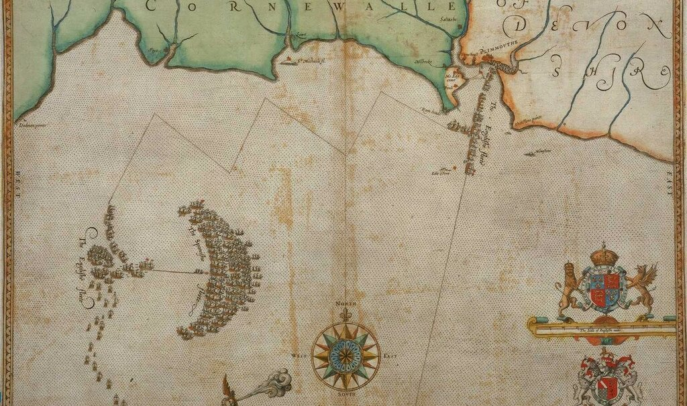
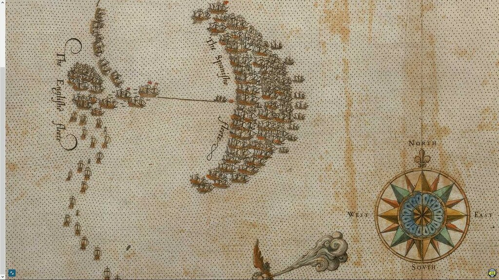

После того, как мы познакомились с двумя главными действующими лицами нашего рассказа, перейдем к изложению Дневника солдата (историю этого документа мы поместили ранее), позволив себе иногода отвлекаться от его содержания для комментариев и разъяснений.
Предварительно поместим карту из «Морского атласа» с изображением маршрута Непобедимой армады на фоне военных действий в Европе в 1585-1604 гг.
Источник: Морской атлас. Том III.-Главный штаб военно-морского флота (1958) (кликабельно)
Дневник открывается записью за 22 июля 1588 года. Чтобы картина была полной, скажем несколько слов о предшествующих событиях.
9 мая 1588 г., после пышной службы к Кафедральном соборе Лиссабона, герцог Медина-Сидония отдал приказ кораблям Армады поднять якоря, покинуть Лиссабон, и двигаться на север вдоль португальскою побережья. Но есть приказы, которые не в состоянии выполнить даже самые мужественные моряки. Неблагоприятный ветер и сильное волнение не позволило кораблям начать движение в течение трех последующих недель. И лишь 30 мая Армада вышла из Лиссабона. Еще две недели прошли в неравной борьбе со стихией. Проходить удавалось едва ли больше десяти миль в сутки. Цель похода оставалась недостижимой, но запасенные ресурсы были истощены. Наибольшую проблему создавал дефицит питьевой воды. Медина-Сидония собрал совет высших командиров Армады, на котором было решено зайти в порт Ла-Корунья. Но даже этот простой маневр для кораблей испанских эскадр не обошелся без потерь: шквал рассеял часть Армады и лишь к 24 июня последним кораблям флота удалось стать на якорь в Ла-Корунье. 27 июня военный совет Армады рекомендовал королю отложить экспедицию, чтобы восполнить потери в людях и возобновить припасы. Король был настроен решительно: поход должен быть возобновлен как можно скорее. 22 июля Непобедимая Армада покинула Ла-Корунью. Далее будем следить за событиями вместе с автором дневника.
Утром в пятницу 22 июля, в день св.Марии Магдалины, Армада покинула порт Ла-Корунья. Но корабли не смогли пройти и двух лиг, так как вынуждены были бросить якоря из-за полного штиля. На заре следующего дня, субботы 23 июня, корабли поставили паруса при юго-юго-западном (SSW) ветре и продолжили плавание.
Примечание 1. (Морская лига (nautical league, marine league) — единица длины, применяемая в морском деле. Равна трём морским милям, примерно 5.6 км),
Примечание 2. При указании на конкретные румбы компаса, в том числе и на направление ветра, следует принимать во внимание изменение магнитного склонения, произошедшие после 1588 года. Магнитное склонение для той части Европы, в которой развернулись рассматриваемые нами события, изменились на целый румб к востоку.
Во вторник 26 июля, в день св. Анны, мы вновь легли в дрейф и смогли возобновить плавание только в четыре часа после полудня, при северном ветре, который сохранялся до рассвета вторника 27-го, когда он переменился на западный и удерживал это направление до четырех пополудни среды; в это время ветер усилился до такой степени, что возникла перекрестная волна (mar al través)
Примечание 3. Перекрестное волнение, квадратная волна (mar al través, mar cruzado (исп.), cross sea (англ.)) – состояние морской поверхности, возникающее при взаимодействии двух волновых систем, двигающихся под углом друг к другу. В открытом море может представлять серьезную опасность для мореплавания.

Перекрестное волнение в районе маяка на острове Ре, близ Ла-Рошели, Франция. Фото Michel Griffon
В тот день луна была на юге, а перед ней находилась [Полярная] звезда.
На рассвете четверга 28 июля мы продолжили путь в составе, сократившемся на сорок кораблей, которые отделились от флагмана ночью. В их числе четыре галеры, которые не выдержали непогоды. Море успокоилось, мы продолжали движение при том же западном ветре, но при уменьшенной парусности, чтобы дать возможность отставшим кораблям догнать нас.
В пятницу 29 июля, в три часа дня, увидели побережье Англии и соединились с пропавшими кораблями, за исключением четырех галер и флагманского корабля эскадры Хуана Мартинеса де Рекальде.
Примечание 4. Флагманский корабль (la nao capitana) бискайской эскадры Santa Ana сбился с курса «вследствие халатности штурмана и поломки фор-стеньги» («por el descuydo del piloto y de haverse rompido un árbol de gavia de la proa»), укрылся от шторма в La Hogue (нынешний Сен-Ва-ла-Уг , Saint-Vaast-la-Hougue, Франция), затем перешел в Гавр, где был блокирован англичанами до окончания кампании. Армада таким образом потеряла 32 пушки. Кроме того, не смогли (или не пожелали?)покинуть убежище и четыре галеры.


Положение кораблей Армады по состоянию на 29 июля 1588 года. Гравюра Augustine Ryther, 1590. Лондон, National Maritime Museum. Из атласа Роберта Адамса.
Стояли с убранными парусами до следующего дня, субботы 30 июля. На рассвете начали движение по направлению к Плимуту, но в пять часов после полудня вновь убрали паруса, так как увидели корабли противника с подветренной стороны (a sotavento), а также потому, что было уже поздно и мы не хотели потерять преимущество в положении относительно противника.


Положение кораблей Армады и английского флота по состоянию на 30 июля. Источник см. выше.
Эти действия были предприняты вразрез с мнением адмирал-генерала [Рекальде], который считал необходимым продолжать движение под парусами, пока корабли не достигнут входа в порт Плимута.
Примечание 5. Эта краткая запись в Дневнике отражает драматический поворот в экспедиции Непобедимой Армады. Когда испанский флот увидел английские берега в районе мыса Лизард, Медина-Сидония собрал высшее командование флота на борту флагманского галеона Сан Мартин (São Martinho). Алонсо Мартинес де Лейва предложил с ходу атаковать Плимут, где проходила дооснащение основная часть английского флота. Лейву решительно поддержал Рекальде. Медина-Сидония отверг предложение опытных моряков. Рекальде пытался отстоять свою точку зрения в донесениях к высшему руководству страны (мы имеем сегодня тексты этих посланий), но мобильных телефонов тогда не было, а почта ходила очень медленно, так что эти донесения имели назначение скорее оправдать себя в глазах командования и историков, чем повлиять на развитие событий.
Продолжение последует.